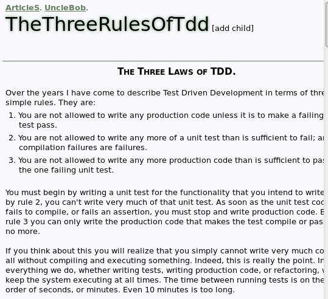
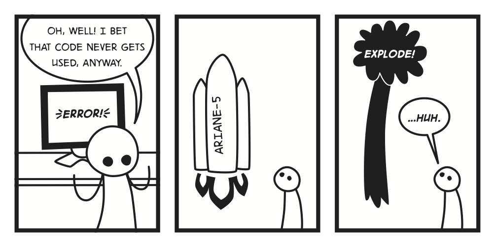

Projektowanie obiektowe
testability, czyli projektowanie pod kątem testów
zasady wspierające dobry design (SOLID principles, Inversion of Control/Dependency Injection, powiązania, spójność)
Trochę szerszego spojrzenia
rodzaje i poziomy testów: jednostkowe, integracyjne, akceptacyjne...
TDD, a może BDD (Behavior-Driven Design) lub ATDD (Acceptance TDD)?
Podejście klasyczne vs. podejście mockowe (Classical and Mockist Testing)
Praca z odziedziczonym kodem (Legacy Code)
jak zrefaktoryzować kod, aby dało się go pokryć testem (rozcinanie zależności / Dependency Breaking)
zrozumienie kodu i zabezpieczenie miejsca zmiany dzięki testom charakteryzacyjnym
Kontynuacja rozwoju
wzorce stosowania TDD
utrzymywanie testów - jak sprawić, by służyły mi za rok równie dobrze jak dziśTest Driven Development
TDD, powody, dowody, studia, mantra, prawa, sposoby, warianty, narzędzia, techniki
Tomasz Borek, @LAFK_pl,
Organizacja
Przerwy, tempo, pytania - jak chcecie
O mnie

Ja w sieci

Zlecenia
audyty kodu, infrastruktury, komponentów, systemu
testy i audyty wydajności czy bezpieczeństwa
wchodzę w bazy danych, GNU/Linuxy i inne pochodne Unixa
programy na zlecenie
prelekcje, wykłady tematyczne, warsztaty, szkolenia
Sages
Sages - Szkolenia i doradztwo IT dla profesjonalistów
dla firm w branży IT I spoza, jak długo w grę wchodzi tworzenie oprogramowania
Misja?
Misją firmy jest wspieranie procesu projektowania, wytwarzania i wdrażania oprogramowania w przedsiębiorstwach i instytucjach publicznych, aby zminimalizować koszty, czas i ryzyko, związane z tymi przedsięwzięciami.
http://www.sages.com.pl/sages
— Sages - o nas
— Sages - o nas
O Was?
Kim jesteś?
Twe imię?
Czemu jesteś tutaj?
O szkoleniu w punktach
wprowadzenie, podstawy
narzędzia, techniki
zaawansowane - co: dalej, potem, następne
…
| Będziecie sobie rączki brudzić |
Łapki w górę, kto używa:
Szkolenie jest dla Was!
Jak w temacie. Jest dla Was. Was! Wyciągnijcie ile można!
Repeta i Retro
20 minut dziennie, 20 minut na koniec
| będą kwizy, niniejszym ostrzegłem! :-) |
Retrospektywa jedno
Realia drugie. Nie chciałbym podczas retro słyszeć, że:
brakowało mi X
może masz na slajdach, czekałem, ale nie masz
bo tam w pracę wpadłem i nie wiedziałem… zapytaj!
Zmiana jest możliwa! Mogę zmienić slajdy! Tylko muszę wiedzieć dokładnie czego dusza chce. |
Pytania?

| zwykle pojawia się przy okazji podsumowania. Czyli rzadko. Nie czekajcie nań! |
| a jak nie będzie pytań… |
Podstawy
Demonstracja: FizzBuzz
- FizzBuzz
gra dla młodszych, by nauczyć ich liczenia. Dzieci krzyczą liczby, ale jeśli liczba podzielna jest przez 3, powinny krzyknąć fizz a jeśli przez 5 - buzz. Jeśli liczba podzielna jest przez 3 jak i przez 5 (np. 15), dziecko powinno powiedzieć fizzbuzz, stąd nazwa gry.
Najpierw FizzBuzz po prostu, bez testów.
Wnioski: FizzBuzz po prostu
prosty problem można skiepścić
nie ma pewności czy to działa nawet wtedy
kilka linii kodu i kilka różnych scenariuszy testowych
trudno testować monostan czy efekty uboczne (Java: statyki, voidy, Python: metody klasowe, JS: BOM, globale)
TDD?
- TDD, Test Driven Development, Test Driven Design
technika programistyczna, pozwalająca by testy napędzały programowanie (lub, wedle niektórych, projektowanie), rozpropagowana przez Kenta Becka, pierwotnie jako jedna z technik XP, potem zaadoptowana do zwinnych metodyk. Polega na pisaniu testów przed pisaniem kodu produkcyjnego.
Klasyczna mantra TDD
Red - zaczynamy od nieprzechodzącego testu
Green - doprowadzamy test do stanu zielonego, czyli piszemy tyle kodu, by test przeszedł
Refactor - zmieniamy kod, nie zmieniając zachowania, krok opcjonalny
Czerwone - Zielone - Refaktoryzacja, to klasyczna mantra TDD.
3 prawa TDD
Piszesz kod produkcyjny tylko po to, by nieprzechodzący test zaczął przechodzić
Piszesz minimum testu jednostkowego by nie przeszło; błędy kompilacji znaczą, że nie przeszło
Piszesz minimum kodu produkcyjnego, by przeszedł test jednostkowy
Nie wolno pisać produkcyjnego kodu w innym celu lub dalej. Nie wolno pisać testów lub ich dopisywać PO osiągnięciu porażki.
3 prawa TDD wg wujka Boba

Przypominajka i FizzBuzz TDD
Prawa i mantra za nami. Test jednostkowy jest szybki, nie gada z… niczym właściwie. TDD to testy PRZED.
- FIRST
Fast, Isolated/Independent, Repeatable, Self-explanatory/Self-validating, Thorough/Timely
| Demo? FizzBuzz raz jeszcze, tym razem w TDD. Skasujcie poprzedni kod lub zacznijcie od nowa. |
Wnioski: FizzBuzzTDD
od jakiego testu zacząć?
klasy wejść: liczba, przez 3, przez 5, przez oba
grupy testów, parametryzacja rulez
asercje…
nie testujemy …
Wnioski: asercje
co to jest asercja:
asserti-ea,assert,console.assertlub własna funkcjamiękka i twarda asercja
dobry komunikat o błędzie (dobry, czyli?)
ile asercji na jeden test?
Nie testujemy języka!
Jawy (jak działa enum, komparator…)
Pytona (zakulisowa podmiana typu numerycznego, model danych…)
JawaSkrypta (konwersji typów, BOMa, wbudowanych API…)
Nie testujemy dynamicznego typowania
EAFP > LBYL z Pytona obowiązuje też w JSie
- EAFP
Easier to Ask For forgiveness than Permission
- LBYL
Look, Before You Leap
Nie testujemy integracji!
z konsolą, przeglądarką, wejściem, wyjściem :(
o ile jest elementem języka, biblioteki, frameworka…
| Nie w testach jednostkowych (z niczym nie gadają? pamiętacie?), ale TAK, BARDZO TAK, w testach integracyjnych. |
| Ponownie: dopóki nas nie sparzy lub nie będzie to konieczne. |
Wnioski: narzędzie testowe
asercje
identyfikacja metod testowych
odpalanie metod testowych
obsługa różnych wyników: sukces, porażka, ignorowanie, błąd
Dlaczego TDD może Ci pomóc
Na rozum
Inni mówią
Wg założeń
Zbadane efekty
Na rozum - brak błędów!
4 do 1
koszt błędu
Koszt błędu?
The cost to fix an error found after product release was four to five times as much as one uncovered during design, and up to 100 times more than one identified in the maintenance phase.”
https://www.isixsigma.com/industries/software-it/defect-prevention-reducing-costs-and-enhancing-quality/
— Systems Sciences Institute at IBM
— Systems Sciences Institute at IBM
| Laurent Bossavit has a nice piece of writing which undermines this quote as something taken out of course notes (so pretty much stated in a lecture)! |

Nasa Mariner - start w 1962
Rakieta na Wenus zbacza z kursu, niszczona 290s po starcie.
One of the official reports was that the omission of a hyphen in coded computer instructions in the data editing program, resulted in incorrect guidance signals being sent to the spacecraft.
http://blog.celerity.com/the-true-cost-of-a-software-bug
— Janet Leon's Celerity blog
— Janet Leon's Celerity blog
Koszt: 18+ mln $.
Ariane 5

Koszt: 4 mln EURO.
Źródło: Bereza-Jarociński i Szomański, Inżynieria Jakości.
Obrazek za: CS Field Guide.
Toyota Lexus
In August 2009 a Lexus ES350 suddenly accelerated out of control at speeds estimated to exceed 100 mph. One of the passengers called 911 and reported that the car had "no brakes." All four passengers were killed when the car crashed.
http://blog.celerity.com/the-true-cost-of-a-software-bug
— Janet Leon's Celerity blog
— Janet Leon's Celerity blog
In November 2009, Toyota dealers were instructed to remove and shorten the gas pedals and to update the onboard computers with a new program that would override the electronic gas pedal when the brake pedal was pressed. Toyota ended up recalling more than 9 million cars worldwide in 2010, but it wasn’t because of a mechanical issue. The cars had a software bug that caused a lag in the anti-lock-brake system.
Koszt: 3 mld $ (odwołania, kampania nakłaniające do odwołań, itp.)
przeciętny samochód z wyższej półki teraz ma mln linii kodu
Knight Capital
In August 2012 Knight Capital Group Inc., one of America’s largest trading firms, mistakenly sent out more than four million stock orders in less than an hour. These orders should have been spread out over a period of days—and reversing the trades cost almost half a billion dollars.
http://blog.celerity.com/the-true-cost-of-a-software-bug
— Janet Leon's Celerity blog
— Janet Leon's Celerity blog
Koszt: 440mln $, więcej niż grupa zarobiła w całym 2011.
Zaktualizowali serwery. Poza jednym.
Podsumowanie
NASA pomija
-w kodzie, rakieta za 18mln$ bumNASA, stopy vs metry, prom nigdy nie ląduje
Ariane 5 - kod, którego nikt nie używa, detonuje rakietę, 4mln€
radioterapia śmiertelna bo zły if, umiera
Toyota Lexus - zabija 4 osoby softem, 3mld$ wymiana tegoż
Knight Capital - 1 serwer ze starym kodem - bankructwo (440mln$), więcej niż zarobili za cały rok 2011
Złożoność
przypadkowa
konieczna
im większa tym gorsza
FP > OOP
Złożoność cyklomatyczna
ścieżki przez kod
im więcej kodu tym gorzej
krótkie metody dobre bo testy, czytelność, wydajność, JIT
Inni mówią
czytelność
jakość, mniej defektów
lepszy projekt, API
niższy koszt zmian
dłuższy czas dowiezienia
Źródła
Problemy z tym wszystkim?
badania powinny być powtarzalne!
jaki projekt i czemu robimy go dwa razy?
studenci a studenci, programiści a programiści
jak długo trzeba się uczyć by być dobrym w TDD?
weteran TDD a nowicjusz - wciąż to samo?
jak dany uczestnik jest "dobry w TDD"?
relacje to tylko relacje
To dlaczego TDD może Ci pomóc?
piszesz testowalny kod
błędy
żywa, krzycząca dokumentacja
zrozumienie kodu przez Ciebie i przez innych
automatyzacja sprawdzeń
prostsza weryfikacja defektów
Komunikacja testami
Ćwiczenie w grupach
Pełny cykl TDD
Klasyczna mantra nie jest kompletna i nie obejmuje niektórych przejść pomiędzy stanami
Demonstracja: stosowanie cyklu TDD
test nie przechodzi
test przechodzi
poprawki, jeśli jest co
Mechanika TDD
znamy cykl
jak wybrać następny test do zaimplementowania
nazewnictwo testów
Następny!
co łatwe
losowo
co ważne
wg listy
wg ścieżki
Demonstracja: stos
wg wariantów: co łatwe, wg ścieżki
Nazwy
kluczowe
notacja wielbłąda
notacja węża
Java vs Python
should, test, given-then
Szablony testów
AAA
GWT
Ćwiczenie:
Rzymski Kalkulator
Jako rzymski księgowy, chciałbym mieć program do kalkulacji:
I - II - III - IV - V - VI - VII - VIII - IX - X
X - XX - XXX - XL - L - LX - LXX - LXXX - XC - C
C M D
Pytania?
Narzędzia i techniki (Jawa)
IDE
JUnit 4
TestNG
AssertJ
Mockito
Na start
IDE
generacja kodu
skróty klawiszowe
refaktoryzacja
szablony
własne szablony
JUnit 4
@Parameterized@Theory@Theory@RuleAssume
Przykłady
TestNG
patrz prezka Tomka Kaczanowskiego
patrz dokumentacja
demo na żywo
AssertJ
patrz strona narzędzia
demo na żywo
Maven
Maven SureFire i FailSafe
Podrabiane obiekty
Izolacja
Prościej
Unikanie komplikacji
Przegięcia:
podróbmy wszystko
podróbmy VO
Testy współpracujących obiektów
Jak podrabiać?
czyli jakie są rodzaje podróbek?
wydmuszka
zaślepka
kadłub/szkielet
fałszywka
podróbka
szpieg
Czym to się różni?
wydmuszka - pusta w środku, nie wołaj
zaślepka - ślepe wołanie, nic nie robi
kadłub/szkielet - częściowa robota
fałszywka - coś zrobi, uproszczonego
podróbka - udaje prawdziwe
szpieg - owijka na obiekt z ekstra rzeczami
Detale: wydmuszka
wzorzec NullObject
rzuca wyjątki na implementacji
nie chcesz wołać metod, potrzebujesz po prostu obiektu
Detale: zaślepka
jak wydmuszka, ale bezpieczniejsza
return cokolwiek
jak wyżej, ale gdy jakieś wołanie się zdarzy
Detale: kadłubek
zostawiasz kadłub z klasy
wypełniasz części, które Ci są potrzebne
w sposób, jaki Ci pasuje
Detale: fałszywka
zwykle po prostu "słabsza" implementacja
DocGenerator→[Simple|Basic]DocGeneratorrobi robotę, wystarczającą na potrzeby
ręczna robota
Detale: podróbka
bliska prawdziwemu obiektowi
większość lub wszystkie metody
Detale: szpieg
bierze prawdziwy obiekt
owija się wokół niego
rozmowa kontrolowana
wywołania są rejestrowane
przekazywane do adresata
Terminy sobie
a źródła sobie. Znajdziecie inne definicje, pisane przez ludzi płyciej lub głębiej znających temat.
Tak naprawdę: testowe implementacje, obiekty do testów, podróbka, fałszywka.
Termin podróbka może oznaczać wszystkie: kadłubek, szkielet, zaślepka, wydmuszka, szpieg, itp.
Biblioteki?
Mockito.
Ew. coś innego, jak np. EasyMock.
Źródła
Zastosowania
napędzane testami tworzenie warstwy dostępu do danych
napędzane testami tworzenie interfejsu użytkownika (GUI)
Przykłady
Narzędzia i techniki (JS)
IDE / CLI
Jasmine
npm i Node
Jasmine
Pytania?
Obiektowość a testy
Pytania?
Szerzej o testach ogólnie
rodzaje
piramida
dalsza automatyzacja
Rodzaje aplikacji i testowanie
konsolowe, graficzne, sieciowe, mobilne, chmurowe…
finansowe, wojskowe, medyczne, telekomunikacyjne…
czarno-, biało-, szaro-skrzynkowe
(nie)funkcyjne, ręczne, automatyczne, zmian (regresji)
wydajność, bezpieczeńśtwo, elastyczność…
dynamiczne, statyczne
Piramida testów
RDZ: obrazek stożka lodów i piramidy, warstwy 3 ODDD - integracja - jednostki, żółw, zając, dolary,
image::piramidaTestów
Warstwa testów jednostkowych
pomocne w weryfikacji struktury kodu, logiki, metod, TDD, mniej BDD, szybkie, testy zmian
problem: dużo szpar, w szparach ginie co nie jest "jednostką", np. wymogi jakościowe, z niczym nie gada
Warstwa testów integracyjnych
pomocne w ocenie połączeń między modułami, systemem a bazą, naszego systemu z bazą, plikami, itp.
problem: kosztowne! I im szersze, tym trudniej postawić diagnozę
tu często dodatkowe warstwy, np. API, komponentów, REST, usług, HTTP…
Warstwa testów ODDD
- ODDD, E2E
Od Deski Do Deski; testy ścieżek, End-to-End, testy przez interfejs, testy interfejsu
pomocne w symulacji użytkowników, testują interfejs użytkownika i przez niego - całą aplikację.
problem: diablo kosztowne! diablo czasochłonne! diablo wrażliwe! Diabelskie nasienie po prostu. ;-)
Testy statyczne
- Statyczna analiza kodu
proces sprawdzania kodu aplikacji bez uruchamiania jej. Poleca się automatyzację tegoż.
Automatyzacja: wtyczki w IDE, lintery JSa (JSHint, JSLint, ESLint), npx eslint, npm run, .git/hooks, Husky
Narzędzia i Reguły
Dobre praktyki
Automatyzacja, wtyczki i githooks
CI - CD - CP
Czyli od ręcznego do automatycznego procesu budowy kodu, albo jak nowy gość w firmie robi git push i jego zmiany lądują na produkcji by użytkownicy mogli go obsobaczyć za "cud, miód, malina" kodzik.
Ciągła integracja
- CI
Continuous Integration, integracja różnych linii kodu w jedną, moje zmiany z majstrem, moje i zespołu, majstra z wersją X, itp., serce automatyzacji procesu budowania kodu
Serwery, platformy, narzędzia - wszystko po to, by proces integracji był powtarzalny, automatyczny, szybki i z jasnym rezultatem (sukces, porażka, coś nie tak - nieważne, jak długo wiemy CO).
Serce i start automatyzacji tworzenia kodu. Używane do testów wszelakich. Serio, każdych niemal.
Ciągłe dostarczanie
- CD
Continuous Delivery, dostawa nowych paczek na docelowy serwer; czasem kilka serwerów po kolei (lub naraz). Niektórzy w tym terminie zawierają też wdrożenie. Niektórzy nie. Zależy czy dostawa jest dla użytkowników, czy dla adminów. Jak mamy bardziej skomplikowany proces instalacji na serwerach docelowych to zwykle dostarczamy adminom i oni zajmują się paczką dalej. Wtedy czasem zamiast dostawy jest publikacja (np. w
npmczy rejestrze firmowym) a admini dostają mejla i włączają swój proces.
Ciągłe wdrożenia
- CD
Continuous Deployment, wdrożenie; mając nową wersję (łatę dla) aplikacji, składamy tę poprzednią i podmieniamy na nową (idealnie bez wpływu na użytkowników).
Bywa, że proces w firmie to CI - CD - CD, gdzie pierwsze CD to dostawa do serwera a drugie CD to wdrożenie na rzeczonym serwerze (lub serwerach). Zależy od stopnia skomplikowania jednego i drugiego procesu (i tego jak to "drzewiej" bywało).
Ciągła publikacja, ciągłe wdrożenia
- CP
Continuous Publishing (Publication), publikacja nowej wersji np. w
npm,Maven Central,PyPilub na GitCzymśtam. Wersje GA (General Availability, dla szerokiej publiki a nie tylko beta-testerów), "release", czy po prostu numerkowe są właśnie publikowane. Tu także usłyszycie słówko "release". Publikacja wiążę się ze zmianą oficjalnego numeru wersji i często z ogłoszeniem co to dobrego w rzeczonej nowej wersji mamy.
Diagramy i narzędzia
Czyli jak to wyglądać może i jak to się osiąga. (pliki drawio)
Pytania?
Podsumowanie
Książki:
Kent Beck: TDD by Example
Tomek Kaczanowski: http://kaczanowscy.pl/books/practical_unit_testing_junit_testng_mockito.html strona zawiera wersje dla JUnit i TestNG
Tomek Kaczanowski: Bad tests, good tests
Michael Feathers: Working Effectively with Legacy Code
Laurent Bossavit: https://leanpub.com/leprechauns
Nat Pryce, Steve Freeman: Growing OO Code Guided By Tests, ładnie skleja OO i testowania
TDD
projekt, API, nie tylko kod
3 prawa! test przed impl., min. imp. dla przejścia testu
refaktoryzacja to kosmetyka a nie nowe funkcje
pełniejszy diagram:
czerwone → dąż do zielonego, JAK
zielone → dąż do czerwonego, CO
Obiekty do testów
Testowe (na potrzeby testów) implementacje:
fałszywka, wydmuszka, zaślepka
podróbka, szpieg
Czytajcie dokumentację Mockito.
Testowalny kod
Narzędzia
TestNG, Mockito, Maven Surefire i FailSafe, AssertJ
doctest, pytest, setup scripts, .git/hooks,
Jasmine, .git/hooks, npm
jak potrzeba - inne